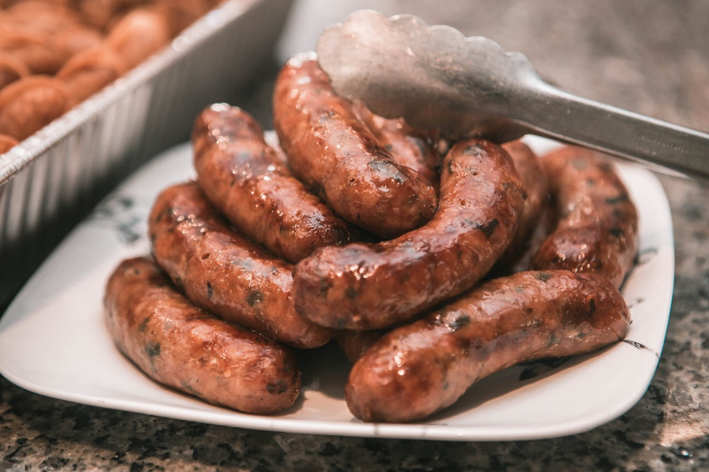
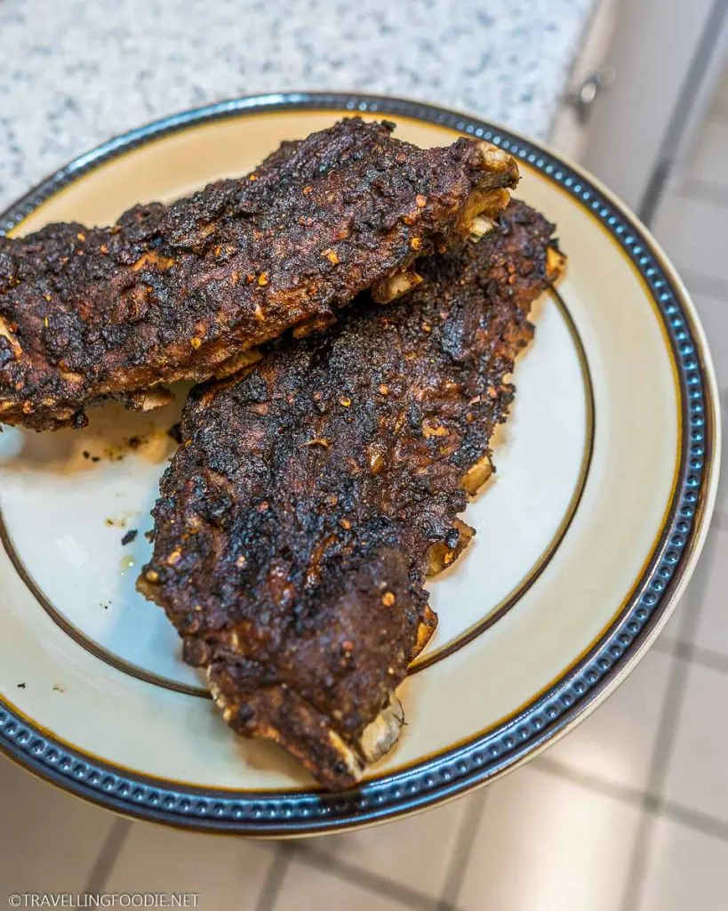

All products are completely made in house. All deli and meat products are cooked and processed in the early morning. Below are some of our famous products.

These eggrolls are some of our most well know deli products. These eggrolls are made fresh everyday and usually sells out throughout the afternoon.
Our Hmong sausages are completely homemade. All ingrediants used for the sausages can be found in the store.
Pork ribs are one of our more robust options in the deli. There are two varieties to choose from which is the spicy pork ribs and original pork ribs.

Our rotisserue chickens are cooked early in the morning. This remains as one of our most popular deli products. It is simple and delicious!